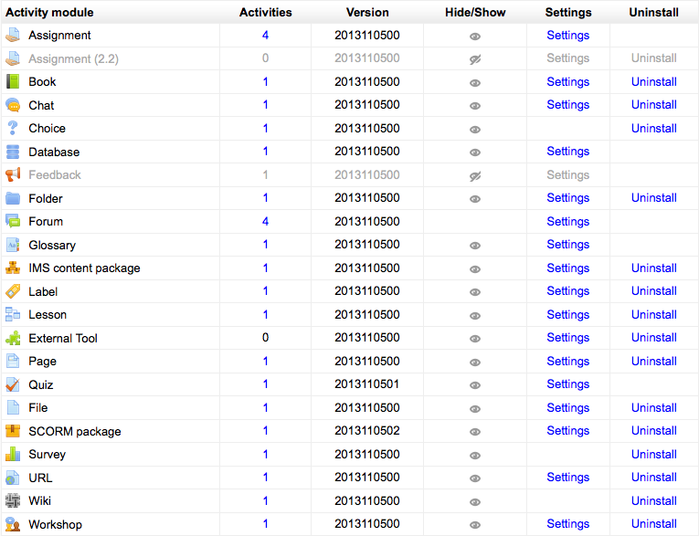

An administrator can manage Moodle’s activity modules for the site in Administration > Site administration > Plugins > Activity modules > Manage activities, including any contributed modules that have been added.
The activities column lists how many activities for each module there are on your Moodle site. If you click on a number, the list of courses containing that activity will be displayed.
The numbers against the modules tell you the version (or age) of the module. It is useful to know how up to date each module is and, particularly with contributed modules, it is important to ensure you have the most up to date version that matches your version of Moodle. The first four digits relate to the year of the module.
The hide/show column allows selected modules to be hidden i.e. they do not appear in any course “Add an activity” dropdown menu and cannot be used in any course. To hide a module, click the eye icon so that it changes to a closed eye.
The Feedback module (which will eventually be replaced by a newer survey module) is hidden by default.
Apart from the Forum module, any module can be deleted using the link in the delete column. There is no reason for standard modules to be deleted, however contributed modules may need to be deleted before upgrading.
Note: To delete a module completely, in addition to deleting it on the manage activities page, you also need to remove/delete the actual module folder from the moodle/mod folder, otherwise Moodle will reinstall it next time you access the site administration.
Many of the modules have additional settings, mostly enabling default values to be set, which can be accessed via the links in the settings column.